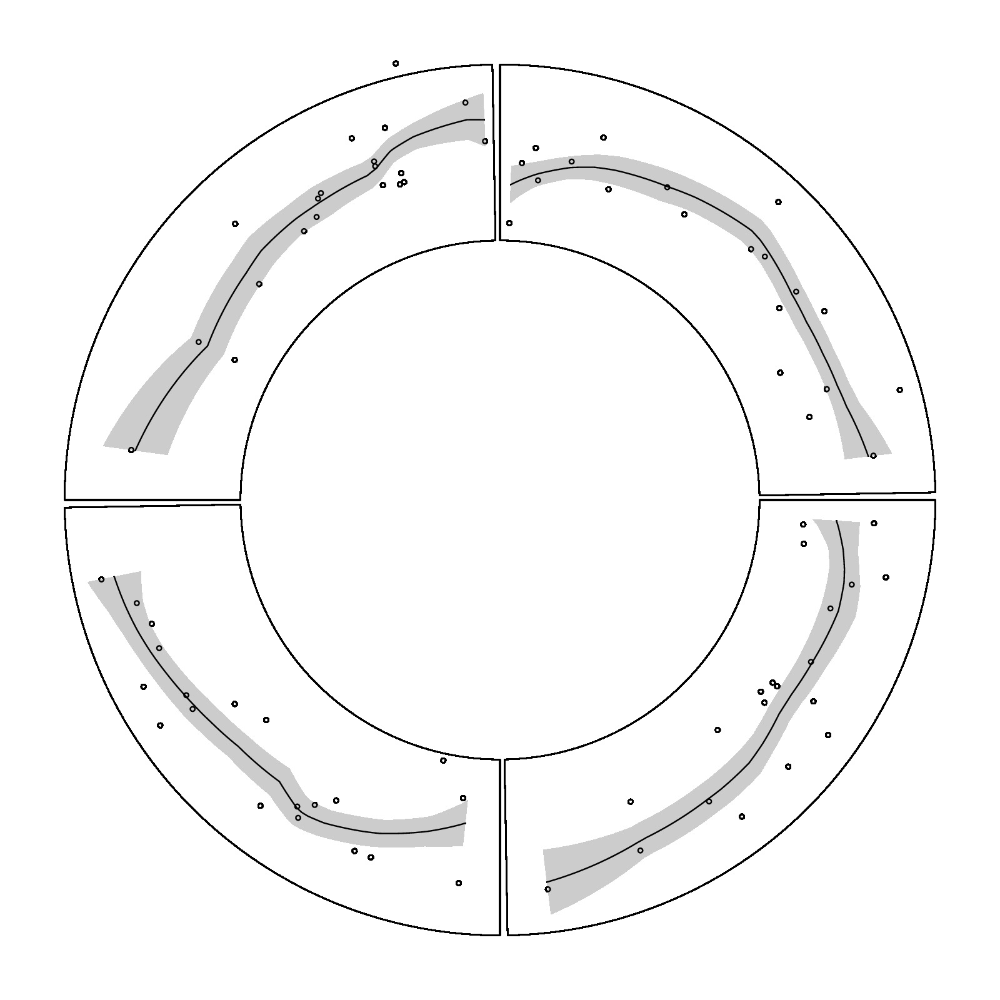

library(circlize)
factors = letters[1:4]
circos.initialize(factors, xlim = c(0, 1))
circos.trackPlotRegion(ylim = c(-3, 3), track.height = 0.4, panel.fun = function(x, y) {
x1 = runif(20)
y1 = x1 + rnorm(20)
or = order(x1)
x1 = x1[or]
y1 = y1[or]
loess.fit = loess(y1 ~ x1)
loess.predict = predict(loess.fit, x1, se = TRUE)
d1 = c(x1, rev(x1))
d2 = c(loess.predict$fit + loess.predict$se.fit, rev(loess.predict$fit - loess.predict$se.fit))
circos.polygon(d1, d2, col = "#CCCCCC", border = NA)
circos.points(x1, y1, cex = 0.5)
circos.lines(x1, loess.predict$fit)
})
circos.clear()